Verkefni 2 – Parametrísk hönnun og tölvustuddur skurður
Lýsing á verkefni
Markmið verkefnisins var að kynnast notkun vínylskera og parametrískri hönnun með geirnegldum (pressfit) festingum. Verkefnið fólst annars vegar í að búa til hönnun sem skorin var út með vínylskera innan 100 × 50 cm skurðarflatar og hins vegar í að hanna skalanlegt parametrískt módel í CAD hugbúnaði.
Módelið þurfti að vera stillanlegt með parametrum þannig að hægt væri að breyta efnisþykkt, hæð og breidd eftir þörfum notanda. Hönnunin þurfti einnig að innihalda að minnsta kosti þrjá geirneglda festipunkta. Líkt og í síðasta verkefni byrjaði ég á að horfa á leiðbeiningamyndband frá kennara um framkvæmd verkefnisins og helstu ráðleggingar.
Vínylskurður
Eftir það hófst vinnan með vínylskurðinn og kom ekkert annað til greina en að skera út litla flugvél. Eftir smá leit fann ég flotta flugvélarmynd og hlóð henni niður. Ég setti myndina síðan inn í Inkscape og notaði skipunina Trace Bitmap til að breyta myndinni yfir í vektorform.
Áður en ég flutti formið yfir í PDF þurfti ég að passa að allar stillingar væru eins hjá mér og sýnt var í myndbandinu frá kennara, sem reyndist vera raunin. Þegar það var komið á rétt form var skráin tilbúin fyrir vínylskurð.
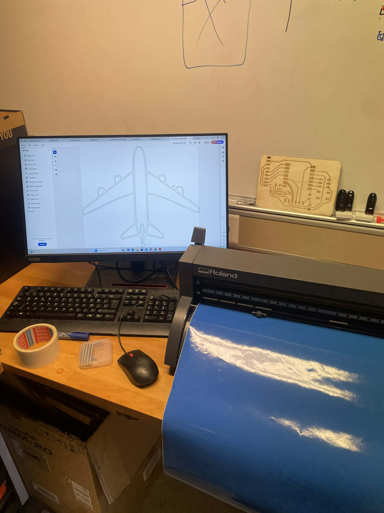
Skurðurinn gekk mjög vel og útkoman varð mjög snyrtileg og má sjá efst á síðu.
Geislaskurður
Eftir að vínylskurðurinn var kláraður fór ég strax að hugsa um hvað ég gæti geislaskorið og það fyrsta sem mér datt í hug var skartgripabox, þar sem allir skartgripirnir mínir voru áður geymdir í poka á skrifborðinu mínu. Þar næst horfði ég á nokkur myndbönd frá Fab Lab Akureyri sem fjölluðu um hvernig ætti að hanna hlut með parametrum ásamt því hvernig hægt er að koma teikningu úr Fusion yfir í geislaskurð.
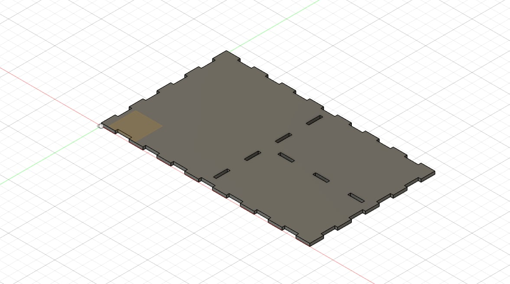
Ég byrjaði á að teikna upp boxið í Fusion 360 og notaðist við stærð á skartgripaboxi kærustunnar minnar sem viðmið fyrir stærð. Ég ákvað hins vegar að hafa mitt box með þremur aðskildum hólfum: eitt fyrir úrið mitt, eitt fyrir hringana mína og síðasta fyrir armbönd og hálsmen.
Ég byrjaði á botnplötunni og vildi tengja hana við útveggina með tennum frekar en fingrum. Eftir að hafa horft á myndband frá Hobbyist Maker um auðvelda leið til að setja box saman með tönnum og parametrískri hönnun var einfalt að aðlaga boxið að mínum þörfum.
Þegar útveggirnir og botnplatan voru klár fór ég að vinna í veggjunum inni í boxinu og þar var engin önnur leið en að nota finger joints. Ég byrjaði á veggnum sem fór beint í gegnum miðju boxins og gekk það upp hiklaust. Hins vegar var veggurinn sem skipti hægri hluta boxins í tvennt aðeins erfiðari.
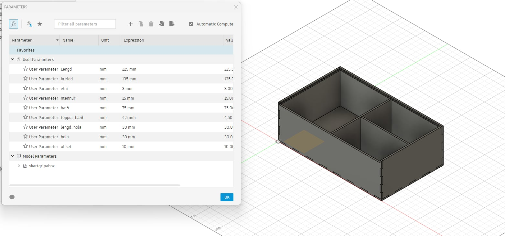
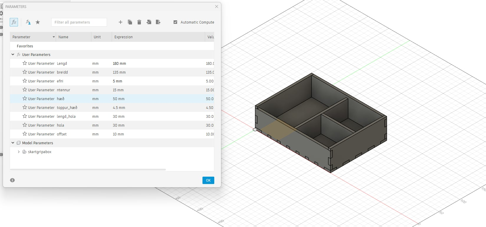
Þegar ég framkvæmdi stikapróf á boxinu kom í ljós að ég hafði sett inn 3 mm í stað fyrir parametrann „efni“ í skilgreininguna á staðsetningu fingursins. Þegar því var breytt virkaði allt eins og við mátti búast.
Síðast sem ég gerði í sambandi við hönnun boxins var að hanna lok á kassann. Fyrsta hugmyndin mín var að nota lamir en ég ákvað frekar að nota rennilok. .
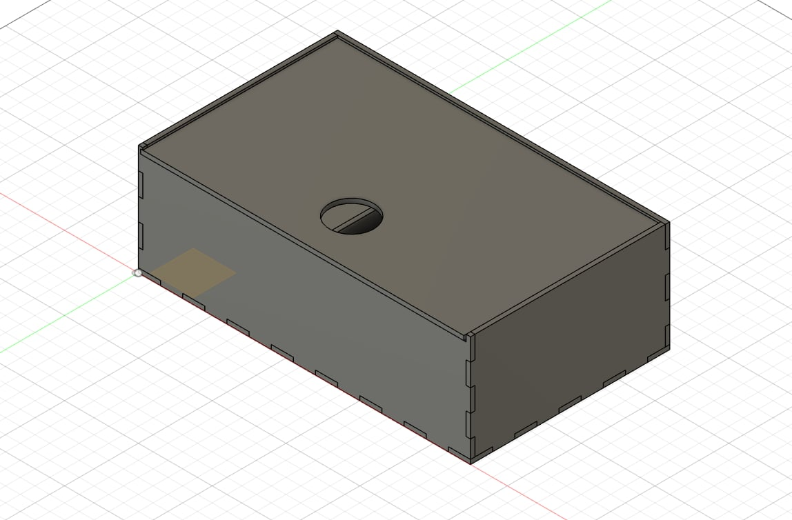
Ástæðan fyrir því var að upprunalegi kassinn átti að vera úr 5 mm akríl en það kláraðist áður en ég gat skorið hann út. Ég ætlaði að fræsa rennurnar sjálfur heima þar sem við erum ekki enn búin að læra á fræsarann í VR-III. Því verður boxið í bili án renna og mögulega tek ég það í sundur þegar ég læri að fræsa í VR-III og klára það að fullu en.
Framkvæmd
Þegar hönnunin var klár þurfti að undirbúa framkvæmdina á boxinu og það fyrsta sem þurfti að gera var kerf-próf. Kerf-prófið fólst í því að skera út lítil box í efnið sem átti að nota og mæla þykkt lasersins þegar hann sker í gegnum efnið. Ég framkvæmdi prófið með Haraldi Jóhanni á 5 mm akrílplötu til að byrja með og fengum við 0.16 mm kerf úr því prófi en við notuðum skífmál.
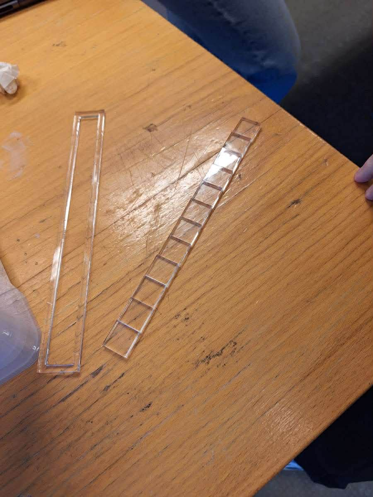
Þegar ég og Aaron prófuðum 0.16 mm kerf á prufuplötu sem var bæði með tennur og fingur reyndist tengingin alltof stíf og erfitt að vinna með hana. Við prófuðum því næst 0.18 mm kerf og virkaði það fínt fyrir tennurnar en fingurnir voru aðeins of stífir. Næst prófuðum við 0.20 mm kerf og þá voru tennurnar orðnar of lausar en fingurnir smellpössuðu. Þá var ekkert annað eftir en að prófa 0.19 mm kerf og reyndist það vera fullkomið fyrir bæði tennurnar og fingurna.
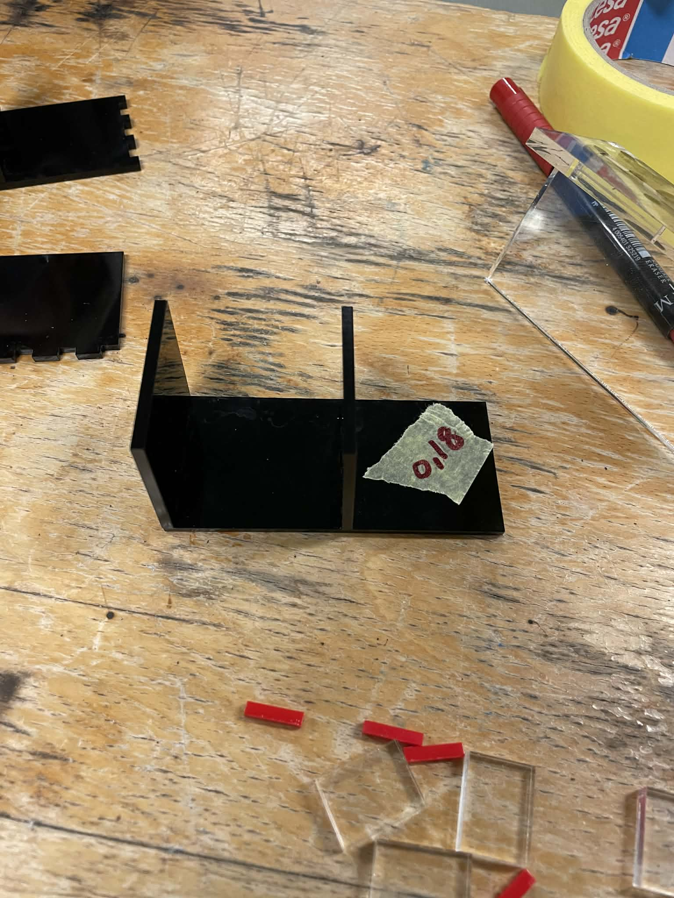
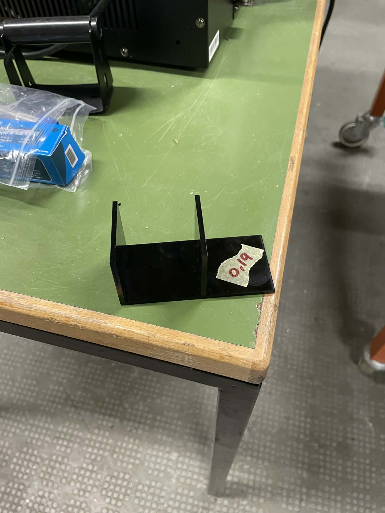
Þá var ekkert annað eftir en að skera út boxið. Ég byrjaði á að taka boxið í sundur með því að fara úr Design hluta Fusion yfir í Manufacture. Eftir að boxið var komið í sundur og lagt lárétt niður bjó ég til nýtt tool í Manufacture sem ég kallaði 0.19 mm laser.
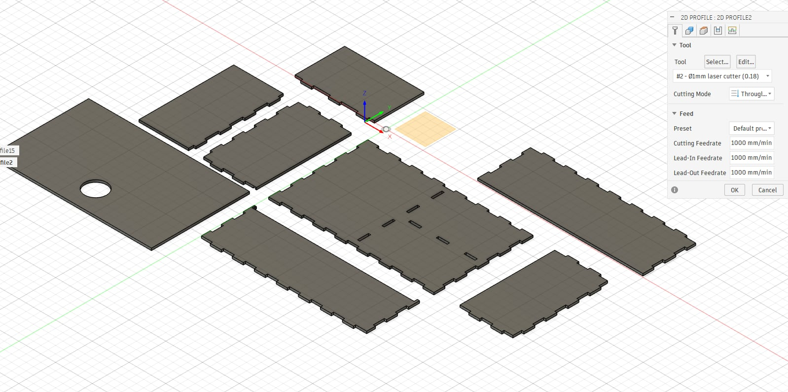
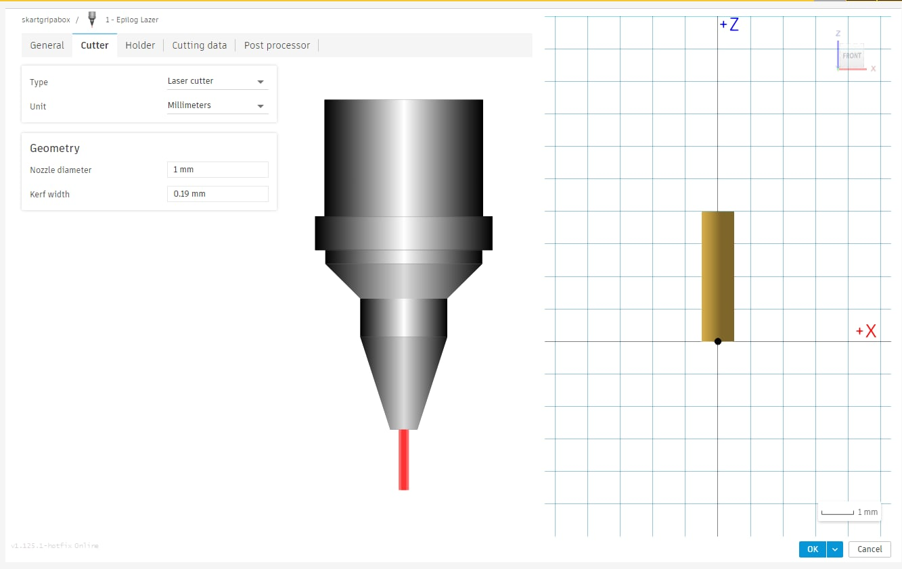
Þegar það var komið valdi ég Fabrication og bjó til setup. Ég byrjaði á að velja tool og valdi 0.19 mm laser og valdi svo hvaða hluti ég ætlaði að skera út. Næst fór ég í Post Process til að breyta skránni í DXF til að koma henni í Inkscape.
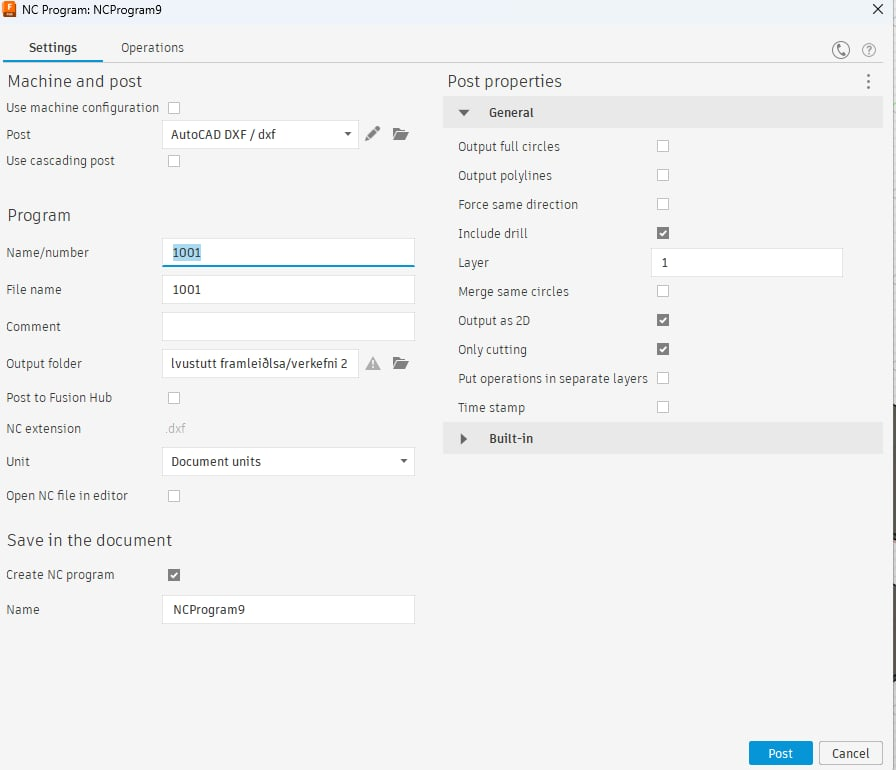
Þegar ég var búinn að hlaða skránni inn í Inkscape færði ég plöturnar til svo sem minnst efni færi til spillis og framkvæmdi svo sömu skref og í vínylskurðinum. Að lokum hlóð ég PDF skránni á USB lykil og fór með hana í laserskurðinn.
Eina stillingin sem ég breytti í skurðinum var að ég hægði á honum úr 22% niður í 8% til að fá eins nákvæman skurð og hægt var. Boxið kom mjög vel út en ég minnkaði lokið aðeins til að bæta upp fyrir rennurnar og virkar það mjög vel. Niðurstöðuna má sjá efst á síðunni.